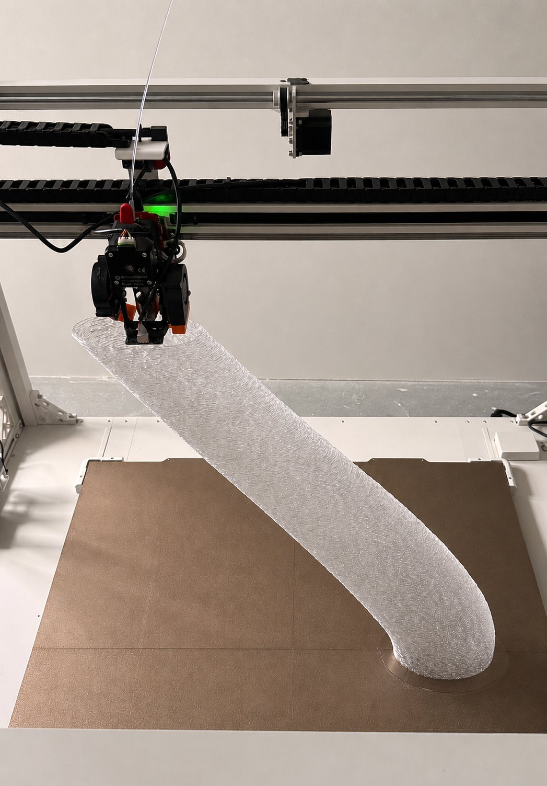
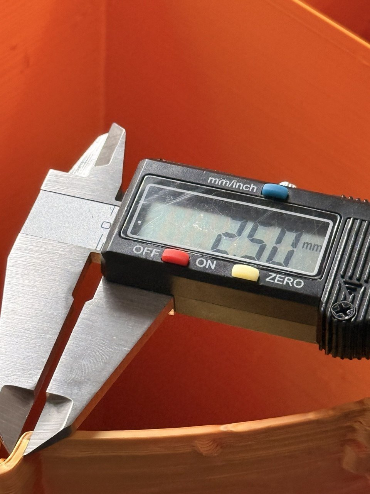
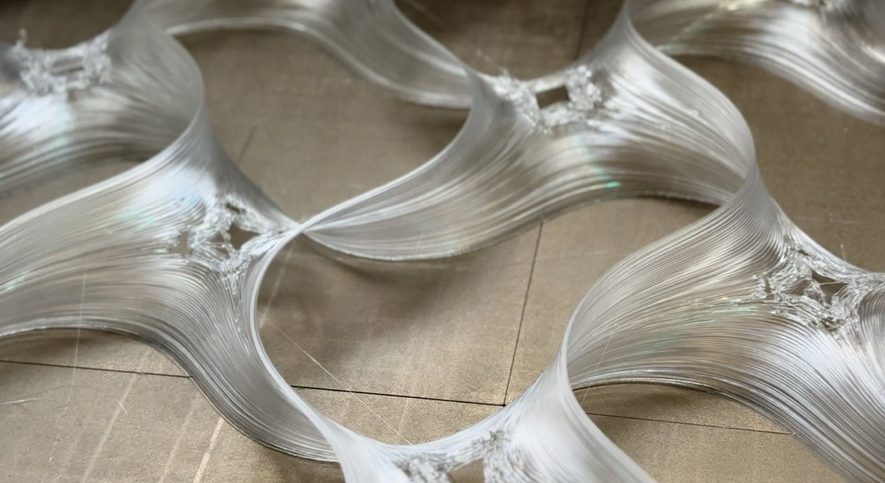
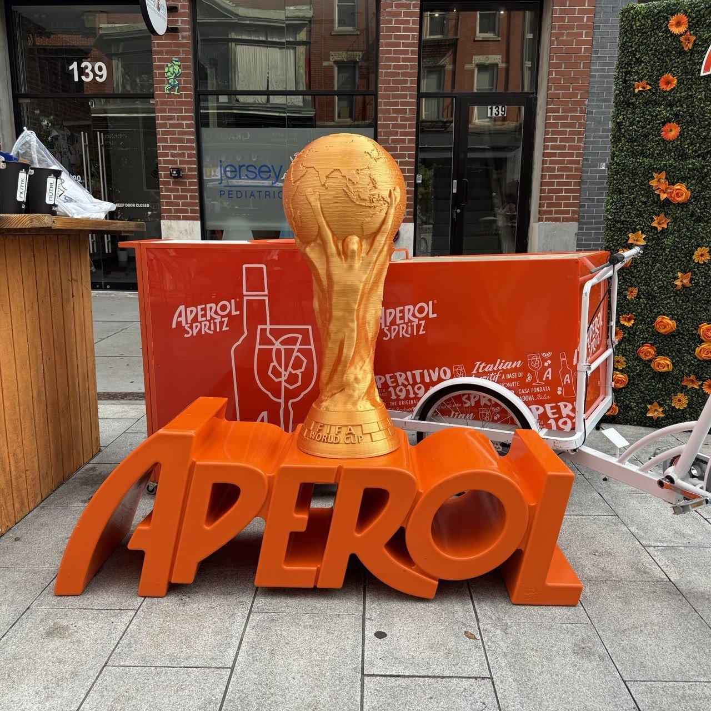
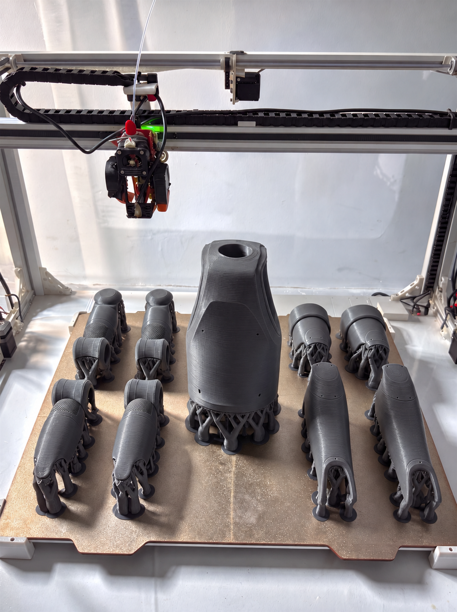
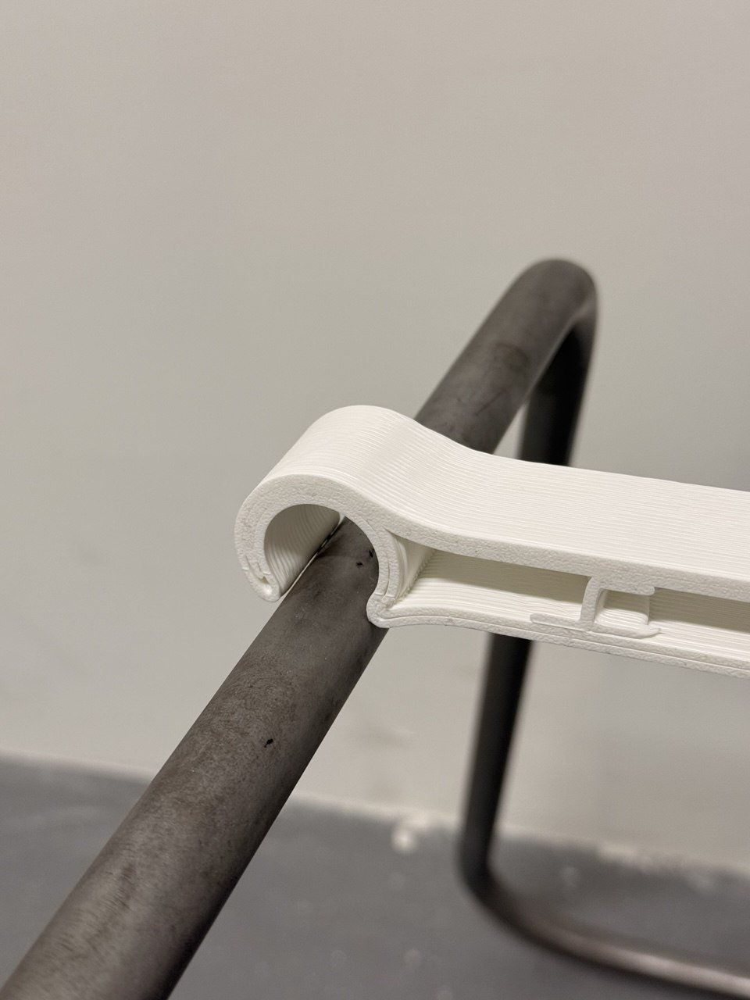
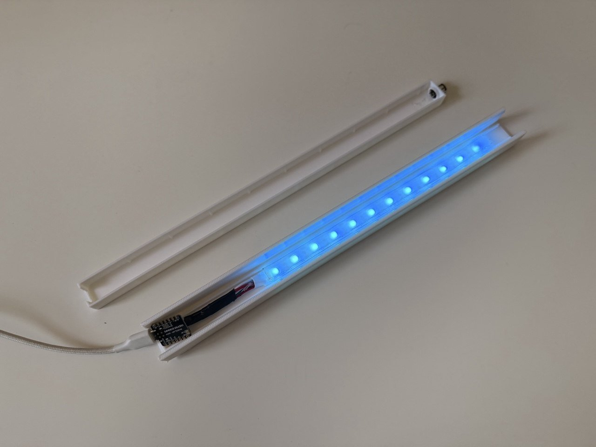
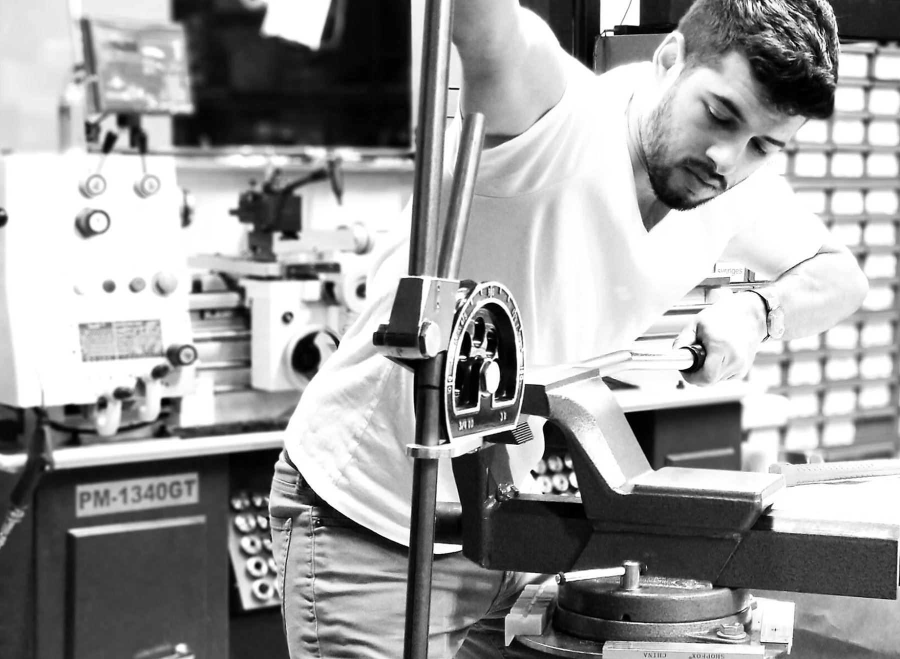
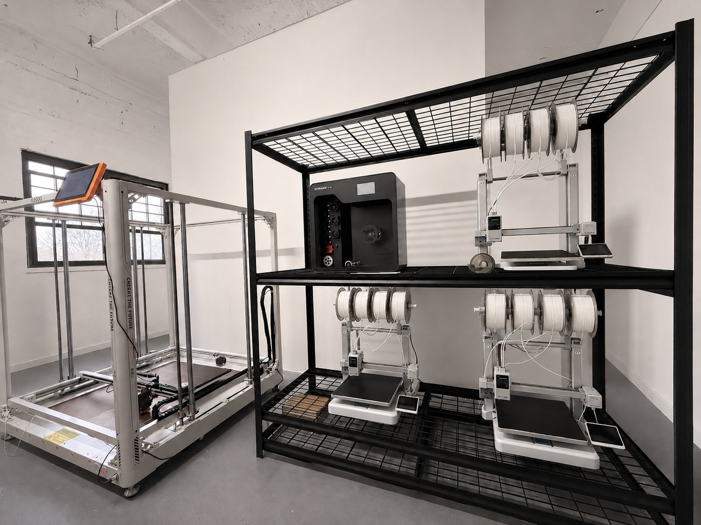

Liberti Lab is a design and fabrication studio in Jersey City.
We take an idea from first sketch to finished part — CAD, functional prototypes, and large-format 3D printing, all under one roof.
Capabilities


Partemis 01
Large Format Additive Manufacturing. Objects at furniture scale produced in a single run — no seams, no glue-ups, no hidden joints.
| Desktop FDM | Large-format FDM | |
|---|---|---|
| Build volume | 260 × 260 × 260 mm | 800 × 800 × 1000 mm, single piece |
| Best for | Standard-size parts, prototypes, batch runs | Signage, props, furniture-scale objects |
| Wall capability | Fine detail, standard walls | 2.5 mm solid single-pass walls |
Materials, stocked and ready to run
Work






What we do
Studio
Built to turn concepts into reality. Modeling, full-scale printing and hand finishing share one room in Jersey City, across the Hudson from Lower Manhattan.
Make it, hold it, push it further. Every round happens under one roof — no handoffs, no outside vendors, nothing lost between the first sketch and the finished object.
Liberti Additive Build works with architects, designers, engineers and everyone in between, realizing conceptual ideas in physical form.

Contact